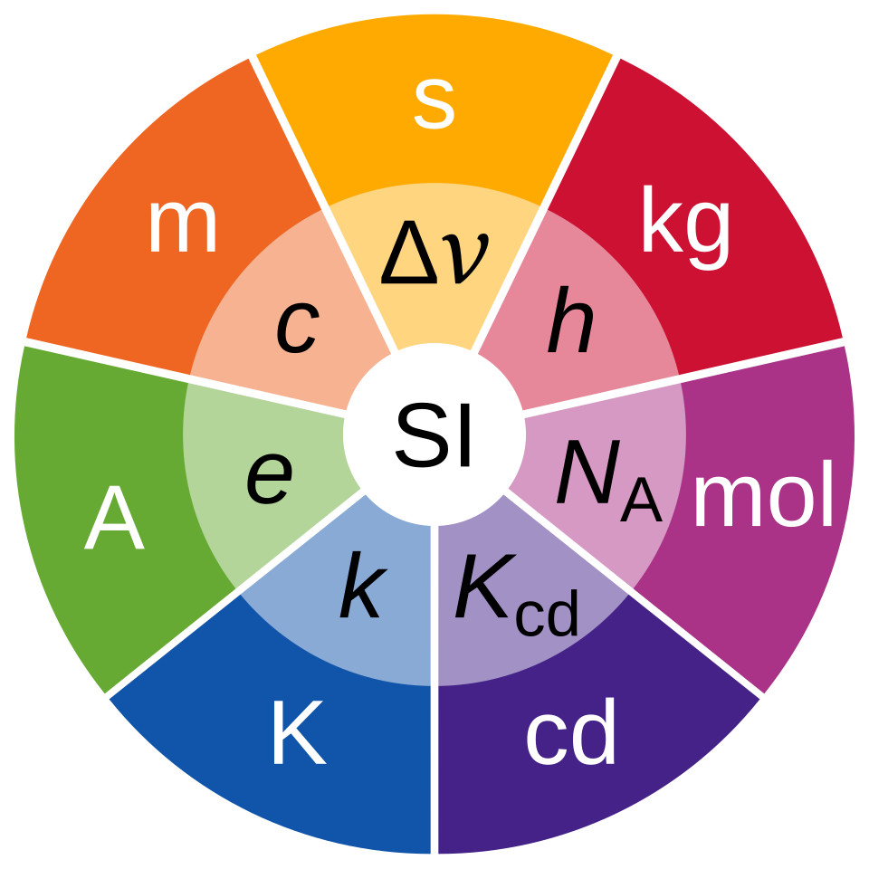

The symbols for the SI units, with the physical constant defining them inside of them.
Units describe meaning and ascribe meaning to numbers. Depending on where you live you use different units for things such as
length, temperature or mass. For a long time the Centimetre-gram-second- or CGS-System was used to describe all other units, however that is not
the system in use today. Nowadays, we (mostly) use the metric or SI-System, (SI - Système international d'unitès), which is the international system of units consisting of
7 main quantities with corresponding units. These are:
\begin{array}{|c|c|}
\hline
Symbol & Name & Quantity \\
\hline
s & second & time \\
m & metre/meter & length \\
kg & kilogram & mass \\
A & ampere & electric \:\: current \\
K & kelvin & thermodynamic \:\: temperature \\
mol & mole & amount \:\: of \:\: substance \\
cd & candela & luminous \:\: intensity \\
\hline
\end{array}
We need a consistent and agreed upon system so that we can all work together to do accurate measurements and calculations. I think you can imagine what
problems it would cause if you defined one meter as the length of a house and I as the length of a mouse and we had to measure something in terms of meters.
In the past, the actual magnitudes for these units were just arbitrarily agreed upon by taking a weight and defining its mass to be 1kg. Obviously,
over time this weight wears down and loses mass, so this method is not reliable. Therefore, in 2019 we revised all the units and defined them exactly
using physical constants of the universe that don't change, such that even aliens could derive these units.
If you're from the US you might use feet, pounds and Fahrenheit instead of metres, kilograms and kelvin/Celsius. For our purposes, we will only be using meters.
Crucially, the difference between completely theoretical mathematics and somewhat applied mathematics/physics is that for the latter we mustn't forget about units
and how to work with them correctly, otherwise the result will be nonsense, be wary of this for the rest of the geometry section (and every other time you work with units).
Now, let's construct our coordinate system and say that one step is one meter (even though this would make our coordinate system quite large).
Therefore, our unit length is 1m. We know the unit square is the square with side lengths of the unit length, and we know the area of a square is \(A = s^2\), therefore
the area of the unit square is \(A = (1m)^2 = 1 m^2\). Notice that now the meter, the unit itself, is squared. For example, if we have a square of side length two meters, then
the area of that square would be \(4m^2\). Four meters squared, four times the unit square, which in our case is \(1m^2\).
When working with very large or very small numbers it becomes tedious, verbose and, honestly, unhelpful to write them out fully. For example if you want to
work with the distance from the earth to the sun (Average distance: 150000000000m), or the mass of an atom (One gold atom weighs about 0.00000000000000000000032707 kg).
Here we introduce scientific notation. Instead of writing it all out, we simply write the significant digits multiplied by a power of ten. The significant digits are all the digits
that actually gives you the value of something. For example, with 150000 all the zeroes are insignificant, while 15 determines the actual value, or with 0.00010203, the zeroes at the front are
insignificant, while 10203 are the significant digits. Using scientific notation, we'd write 150000 as \(1.5 \cdot 10^5\), where only the significant digits are given
as a decimal, while the zeroes/size of the number is given by the power of ten. We'd write 0.00010203 as \(1.0203 \cdot 10^{-4}\).
The SI-System also has a way to write these powers of ten using letters. These are the SI-prefixes.
\begin{array}{|c|c|c|||c|c|c|}
\hline
Name & Symbol & Base \:\: 10 &
Name & Symbol & Base \:\: 10
\\
\hline
quetta & Q & 10^{30} & quecto & q & 10^{-30} \\
ronna & R & 10^{27} & ronto & r & 10^{-27} \\
yotta & Y & 10^{24} & yocto & y & 10^{-24} \\
zetta & Z & 10^{21} & zepto & z & 10^{-21} \\
exa & E & 10^{18} & atto & a & 10^{-18} \\
peta & P & 10^{15} & femto & f & 10^{-15} \\
tera & T & 10^{12} & pico & p & 10^{-12} \\
giga & G & 10^{9} & nano & n & 10^{-9} \\
mega & M & 10^{6} & micro & \mu & 10^{-6} \\
kilo & k & 10^{3} & milli & m & 10^{-3} \\
hecto & h & 10^{2} & centi & c & 10^{-2} \\
deca & da & 10^{1} & deci & d & 10^{-1} \\
\hline
\end{array}
You obviously don't have to remember all of these, but you should know the ones from \(10^{-15}\) to \(10^{15}\), that is femto to peta.
These prefixes is where the "kilo"/k in "kilogram"/kg comes from. Also note that most prefixes representing large numbers are also written as capital letters,
while the prefixes for small numbers aren't capitalized.
We use these prefixes to make our calculations more concise and our results easier to read and it also introduces us to engineering notation.
Engineering notation is quite similar to scientific notation, except that with engineering notation we always use a prefix in our answer. Since the prefixes are (mostly) spaced
out by \(10^3\), we restrict our answer to 3 digits and 2 decimal places (rounding correctly, of course).
To convert from one prefix to another you simply replace the prefix with its
power 10 representation and factor out the prefix you want.
Example: Convert 20km to centimeters, meters and megameters.
Meters has no prefix, so to get from km to m we just write the power 10 of the prefix. Therefore: \(20km = 20\cdot 10^3 m = 20000m\).
Centimeters, c, has a prefix of \(10^{-2}\), so 1cm = \(10^{-2}m \to 1m = 10^2 cm\), which we plug in for meters getting:\(20000m = 20000(10^{2}cm) = 2000000cm\).
Lastly, we want to convert from 20km to megameters. Mega is \(10^6\) while kilo is \(10^3\), so \(1Mm = 10^3km \to 1km = 10^{-3}Mm\), which we plug in getting:
\(20km = 20(10^{-3}Mm) = 0.02Mm\).
Example: Write the average distance from the earth to the sun and the mass of a gold atom using scientific notation and engineering notation.
Solution: \(150000000000m = 1.5 \cdot 10^{11}m = 150 Gm\)
\(0.00000000000000000000032707kg = 3.2707 \cdot 10^{-22} g= 32.707 zg \approx 32.71zg\).
In my opinion, any number larger than \(10^{15}\) or smaller than \(10^{-15}\) should be written using scientific notation, because realistically nobody knows the prefixes beyond that.
Let us apply this knowledge to our study of shapes.
Example: A rectangle has a length of 65cm and a width of 27cm. Find the area in \(mm^2, cm^2\) and \(m^2\) written using scientific notation.
Solution: \(A = 65cm \cdot 27cm = 1755cm^2 = 1.755 \cdot 10^3 cm^2\).
\(1cm = 10^1 mm \to 1.755 \cdot 10^3 cm^2 = 1.755 \cdot 10^3 (10^1 mm)^2 = 1.755 \cdot 10^5mm^2\).
\(1cm = 10^{-2}m \to 1.755 \cdot 10^3 cm^2 = 1.755 \cdot 10^3 (10^{-2}m)^2 = 1.755 \cdot 10^{-1} m^2\).
Example 2: A square has a side length of 1600\(\mu m\). Find the area and write it in engineering notation.
Solution: \(A = (1600\mu m)^2 = 2560000\mu m^2 = 2.56 \cdot 10^6 (10^{-6} m)^2 = 2.56 \cdot 10^{-6} m^2 = 2.56 \cdot 10^{-6} (10^3mm)^2 = 2.56 mm^2\).
OR
\(1600 \mu m = 1.6mm \to A = (1.6mm)^2 = 2.56mm^2\).
Example 3: A rectangle has a length of 80cm and a width of 50cm. Find its perimeter and write it using engineering notation.
Solution: \(P = 2(80cm) + 2(50cm) = 260cm = 2.6m\). (m is preferred over cm and dm)
Lastly, make sure to only work with the same units, as different units or unit prefixes cannot mix. Therefore, if you have different prefixes you must
convert them to a common prefix to compute the result. Usually in physics we'll be working with different units, so you must make sure that the units you get
at the end of your computation makes physical sense.
Example: Find the area of a rectangle with length 95mm and width 5.6cm.
Solution: Notice what happens when you multiply these without first converting the units. A = \(95mm \cdot 5.6cm = 532 mmcm\). Centimeter-millimeter is (sorta) not a valid
unit. It technically is, however no one will be able to work with this result before converting the units to something reasonable. We must first either convert the centimeters
to the millimeters or the millimeters to the centimeters. Let's try the former:
\(A = 9.5cm \cdot 5.6cm = 53.2cm^2\). Very nice!
\( \begin{array}{l} 1.) A = 144cm^2, P = 48cm & 6.) 12345 kg = 1.2345 \cdot 10^4 kg \approx 12.35 Mg \\ 2.) A = 15mm^2, P = 16mm & 7.) 0.0000078025 s = 7.8025 \cdot 10^{-6} s \approx 7.8\mu s\\ 3.) s = 20m \to A = 400m^2, P = 80m & 8.) 300000000 \frac{m}{s} = 3 \cdot 10^8 \frac{m}{s} = 300 \frac{Mm}{s}\\ 4.) s = 12.4m \to A = 153.76m^2, P = 49.6m & 9.) 9192631770 \frac{1}{s} = 9.19263177 \cdot 10^9 \approx 9.19 \frac{1}{ns}\\ 5.) \ell = 50cm, w = 5cm \to A = 250cm^2, P = 110cm & 10.) 160217634 \cdot 10^{-10} C = 1.60217634 \cdot 10^{-19} C \approx 16.02 aC\\ \end{array} \)